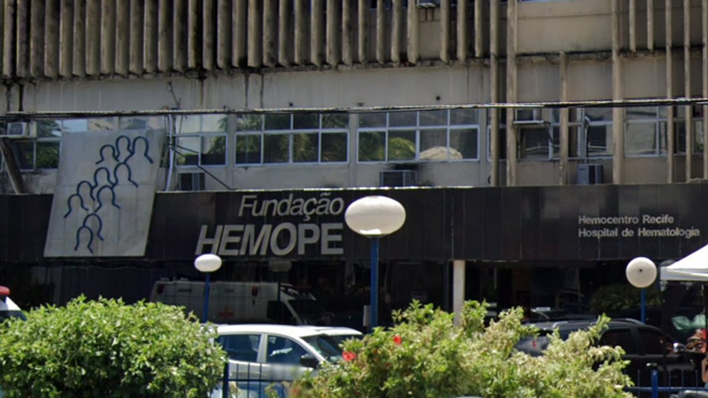
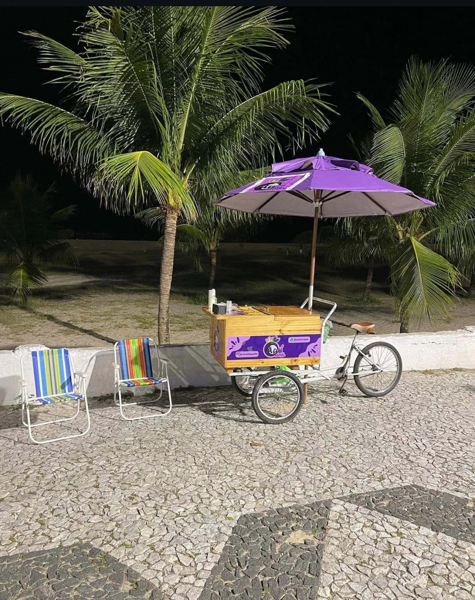
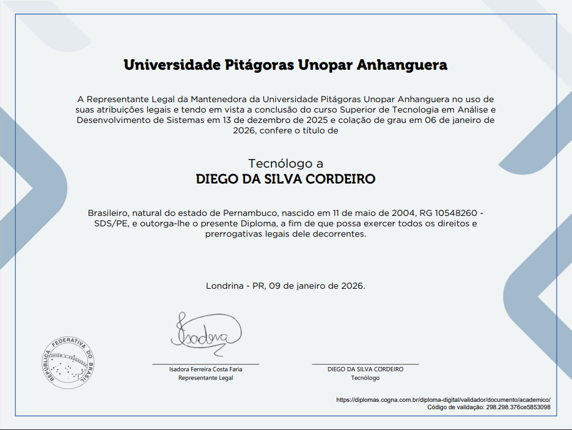
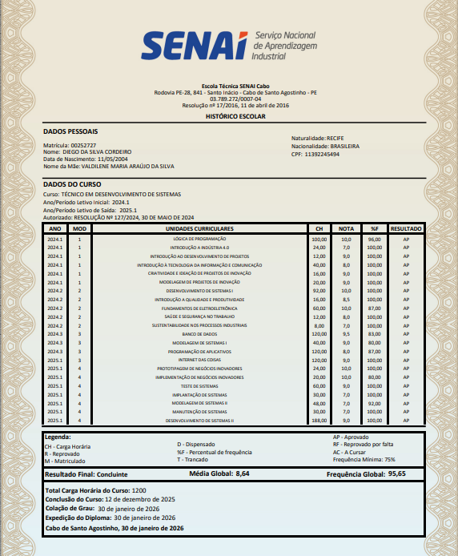

Experiência

Estágio em TI – HEMOPE (10 meses)
Atuei como estagiário de Tecnologia da Informação no HEMOPE por um período de 10 meses, com início em 24/02/2025 e término em 10/12/2025. Durante esse período, prestei suporte técnico a usuários, tanto de forma presencial quanto remota, atendendo também unidades do HEMOPE localizadas no interior do estado. Tive contato constante com demandas de rede e infraestrutura, incluindo suporte a servidores, diagnóstico e resolução de problemas de conectividade, manutenção e limpeza de computadores, além do planejamento e organização de pontos lógicos para novos setores. Também atuei no atendimento e acompanhamento de chamados técnicos, garantindo o suporte necessário para a continuidade das atividades das unidades. Essa experiência contribuiu significativamente para o meu desenvolvimento técnico e profissional, fortalecendo habilidades como comunicação, trabalho em equipe, organização e resolução de problemas, além de ampliar minha visão prática sobre o funcionamento da área de TI em uma instituição pública.

Vendas – Orla de Candeias (2023 – 2025)
Minha primeira experiência profissional foi atuando com vendas de açaí na orla de Candeias, em parceria com meu primo. Durante esse período, tive meu primeiro contato com a rotina de trabalho, responsabilidades diárias e atendimento direto ao público. Nessa experiência, desenvolvi habilidades importantes como comunicação, organização e relacionamento com clientes, além de aprender na prática sobre estratégias de venda, controle básico de caixa e funcionamento do comércio. O contato constante com diferentes perfis de clientes contribuiu para melhorar minha postura profissional e minha capacidade de lidar com o público. Essa vivência foi fundamental para minha formação pessoal e profissional, pois me ensinou valores como comprometimento, disciplina e responsabilidade, além de servir como base para minha evolução no mercado de trabalho e para experiências futuras na área de Tecnologia da Informação.
Formação
Tecnólogo em Análise e Desenvolvimento de Sistemas – Concluído

Técnico em Redes de Computadores – ETE Epitácio Pessoa
Desenvolvimento de Sistemas – SENAI do Cabo de Santo Agostinho

Início de estudos em Cibersegurança
Habilidades
- HTML, CSS e JavaScript
- Redes de computadores
- Suporte técnico a usuários
- Proativo
- Conhecimentos iniciais em Cibersegurança
Contato
Email: diegodasilva365@gmail.com
Falar comigo no WhatsApp